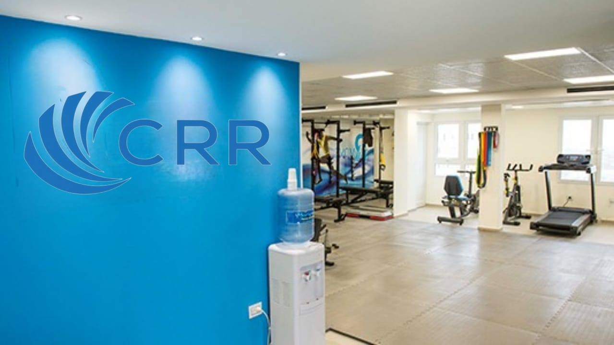
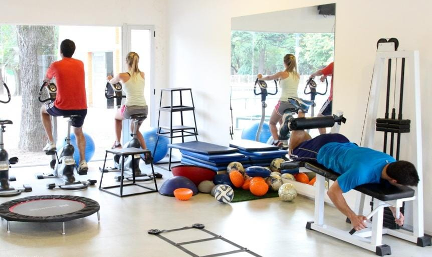

En el año 2010, en la localidad de Funes, provincia de Santa Fe, el CRR fue concebido como un lugar innovador y vanguardista, diseñado especialmente para atender las necesidades de los deportistas de alto rendimiento y ofrecerle la mejor atención posible.
Ver Historia

Áreas Asistenciales